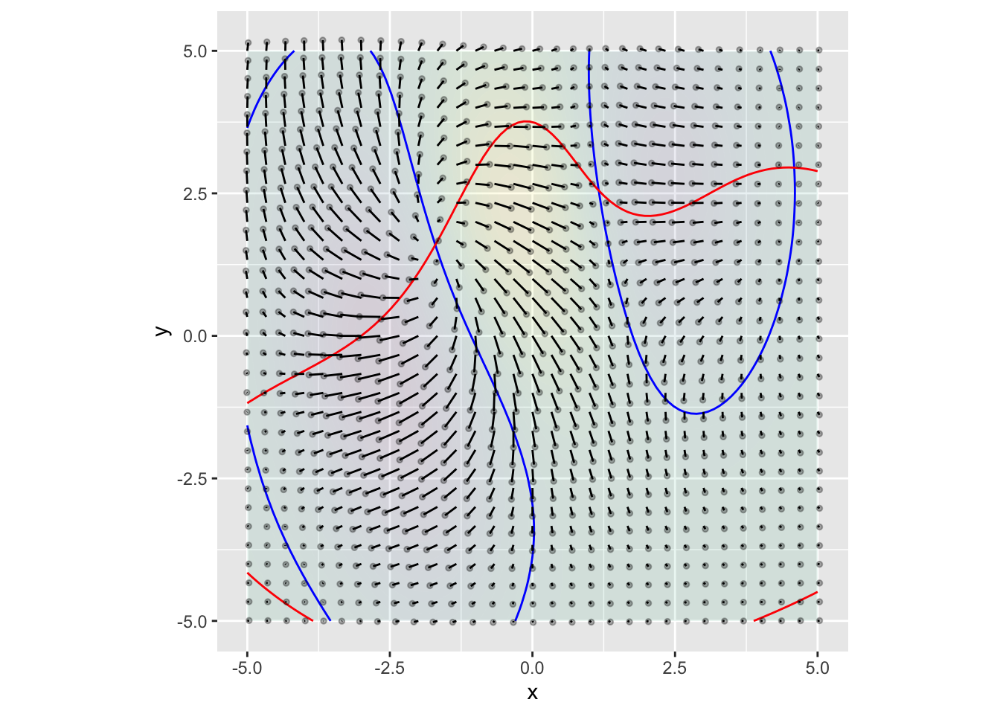
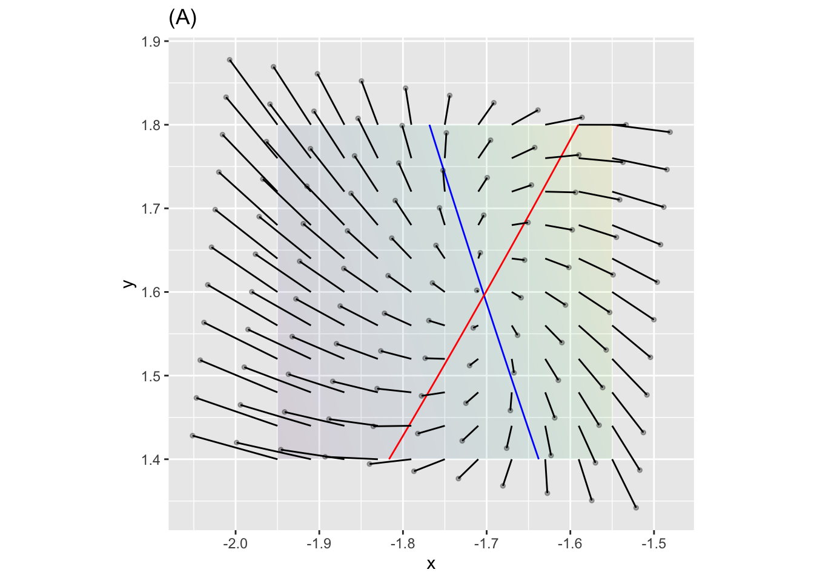
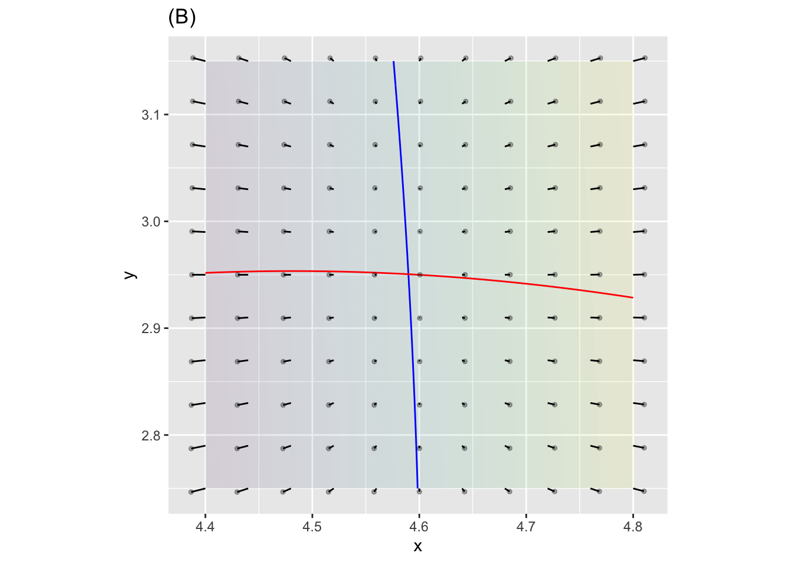
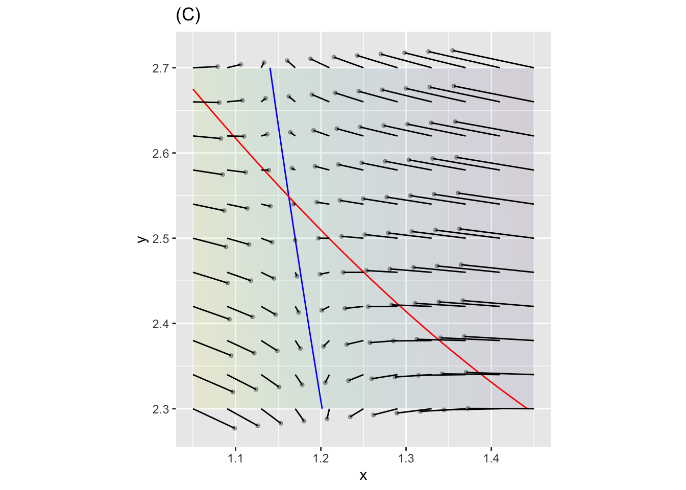
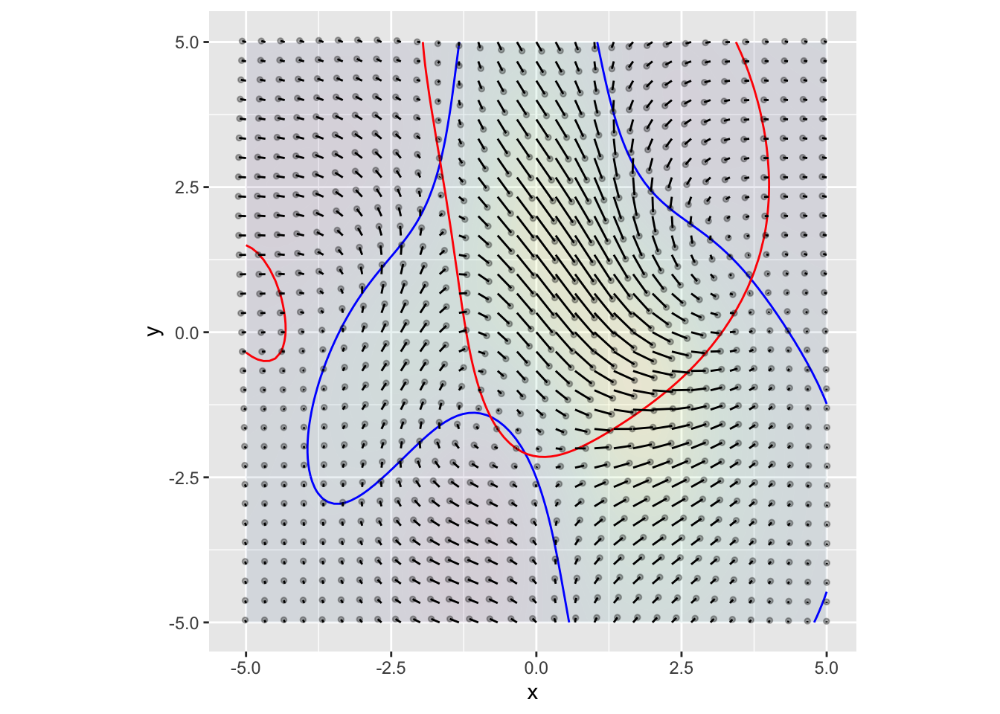
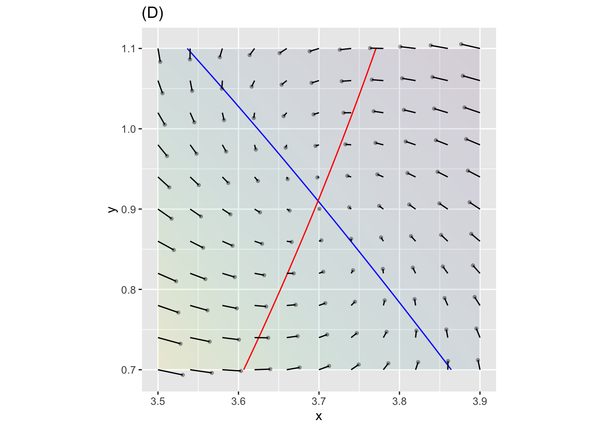
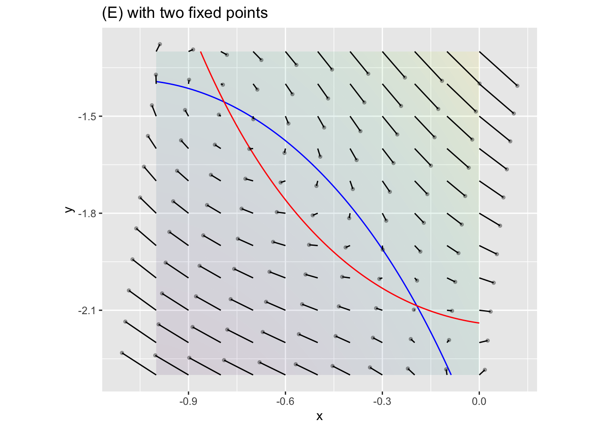
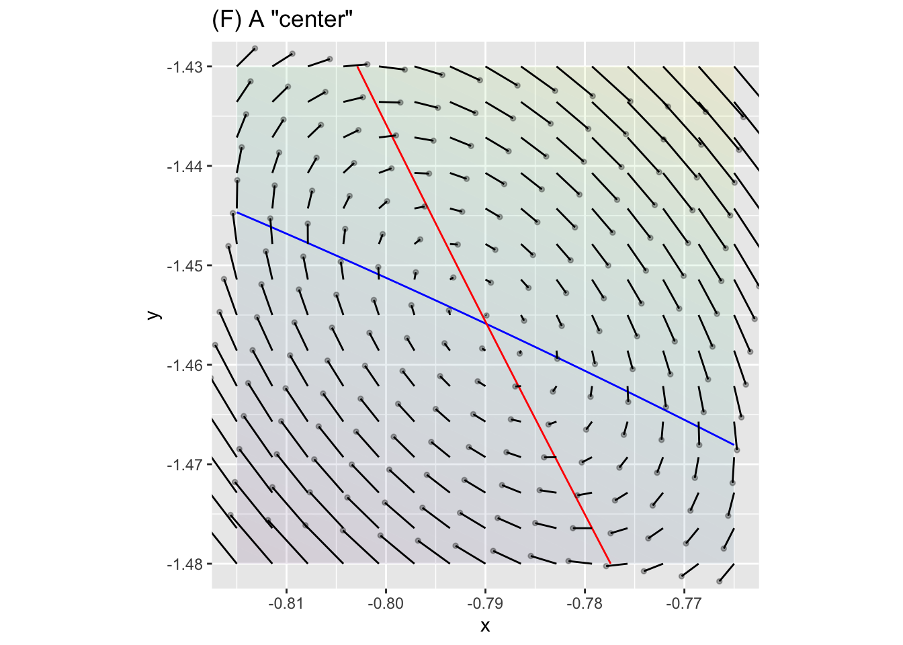

Consider the two-dimensional finite-difference equation shown in the graph:

There are three fixed points visible. The next plots zoom in on each of the fixed points.



Here’s a system which has 4 fixed points in the region shown.
 Plots (D) and (E) zoom in on two regions.


Let’s look a little more closely at the upper-left fixed point in graph (E):

The pattern in figure (F) is clockwise rotation around the fixed point. This kind of pattern is of fundamental importance in physics and engineering.